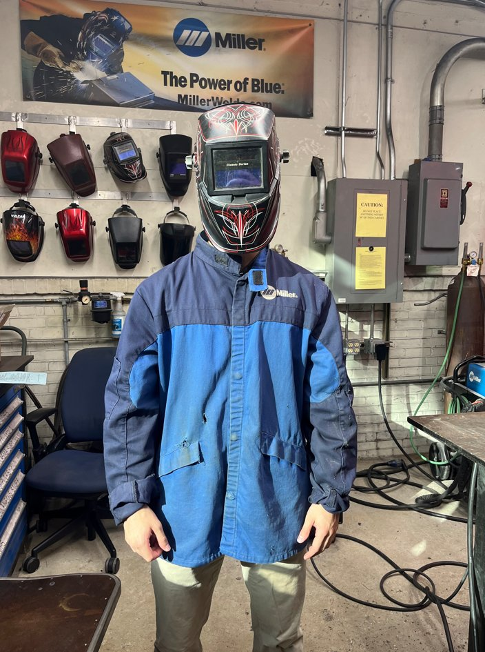

In this lab I worked with a team of three other engineers to manufacture component parts to an oscillating 2-stroke air engine using milling machines and manual lathes. We completed industry standard documentation such as manufacturing inspection records and engineering change notices for the manufactured parts, assembled the air engines and tested them using a compressed air source of 60 feet per second, and then designed a food slicer in SolidWorks to attach to the air engine accompanied by three design reports.
- Manufactured component parts to an oscillating 2-stroke air engine using milling machines and manual lathes
- Completed industry standard documentation including manufacturing inspection records and engineering change notices
- Assembled the air engines and tested them using a compressed air source of 60 feet per second
- Designed a food slicer attachment for the air engine in SolidWorks accompanied by three design reports
-
DML Design Report 1 First design report for the food slicer attachment project
-
DML Design Report 2 Second design report for the food slicer attachment project
-
DML Design Report 3 Third design report for the food slicer attachment project
Beyond the core air engine project, this lab provided hands-on experience with a wide range of manufacturing processes and techniques used in industry. These additional skills complemented the primary coursework and broadened my practical understanding of how components are fabricated and finished in a real shop environment.
